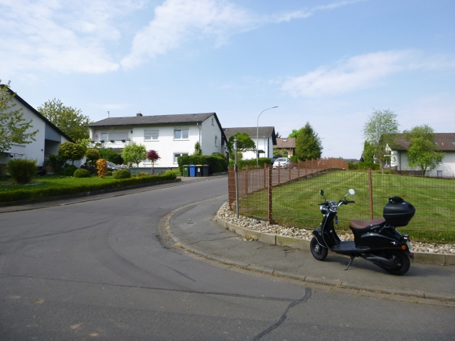
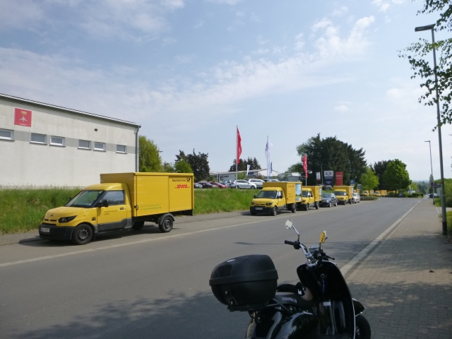
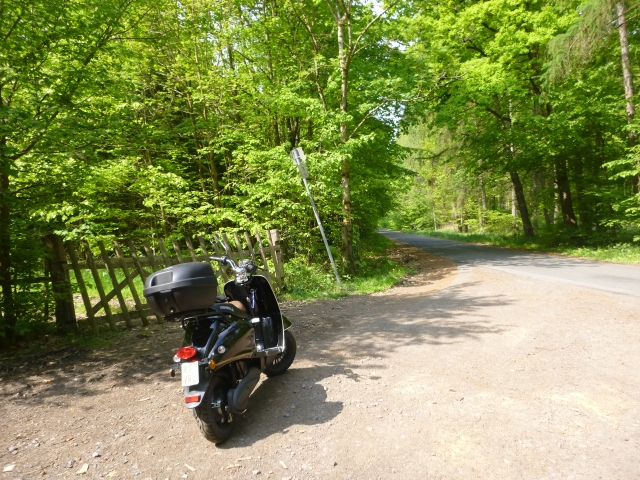
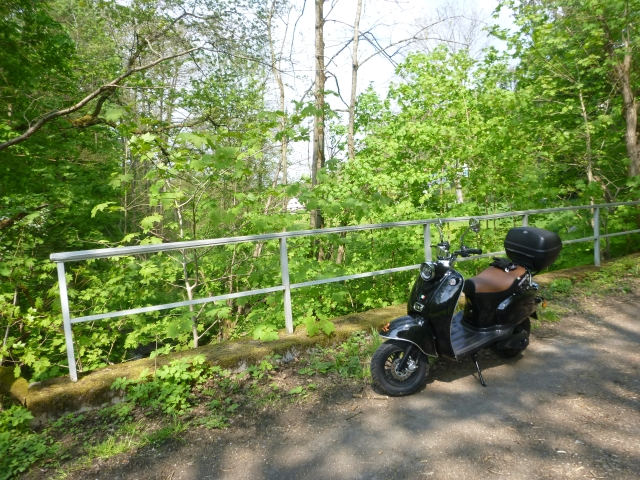
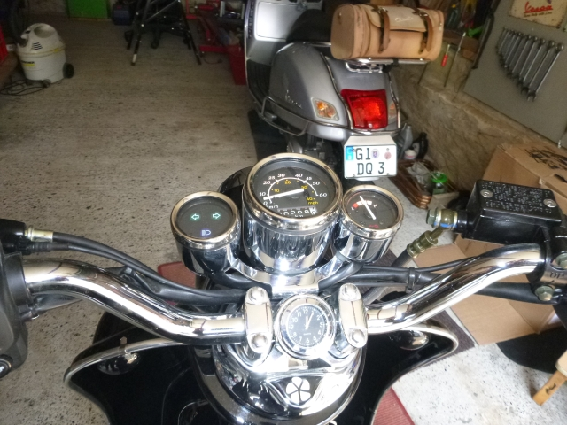
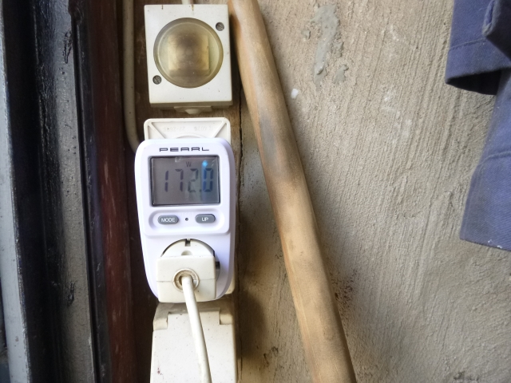

Heute ist eine Kleinigkeit in Laubach zu erledigen, und weil das Wetter so schön und Laubach nur 10 Kilometer entfernt ist, nehme ich meinen chinesischen Stromer für diese Fahrt.
Allerdings spricht wetter.de von Regenschauern, Gewittern und Starkregen ab 13:00, weshalb meine Fahrt bereits um 11:00 beginnt. Das müsste also zu schaffen sein.
Im letzten Jahr habe ich Fahrten wie diese noch mit einer 500er Royal Enfield erledigt und dabei immer noch mindestens 50 Kilometer drauf gesattelt. Das klappt nun leider mit dem eRetro Star nicht, da muss ich schon mit den Kilometern geizen. Dafür geniesse ich immer noch das wunderbare lautlose Gleiten durch unsere Vogelsberg-Landschaften. So ist es auch heute, und der herrliche Mai-Tag verstärkt die Freude noch.

Mein Auftrag führt mich in ruhige Laubacher Wohngebiete, in denen das lautlose Gleiten besonders angebracht ist und gut ankommt. Noch immer sind E-Zweiräder hier dünn gesäät und ein lautloser Roller wird erstaunt zur Kenntnis genommen.

Im Laubacher Industriegebiet bin ich plötzlich in guter Gesellschaft: Jede Menge E-Fahrzeuge der Deutschen Post stehen hier und werden wohl von einer Werkstatt gewartet oder repariert.

Vom Industriegebiet aus führt ein hübsches Sträßchen heraus in den Laubacher Wald. Dabei passiere ich die ehemaligen Gebäude von Friedel Münch, der hier ein paar Jahre tätig war. Einen kleinen Stopp gönne ich uns an der Waldhütte der Stadtverwaltung und ziehe dann weiter in Richtung Ruppertsburg.
Die nächsten Kilometer geht es ständig bergauf und bergab, wobei nach meinem Gefühl die ansteigenden Strecken deutlich häufiger sind. Das führt dazu, dass ich jetzt etwas besorgt den Blick öfter auf die Batterieanzeige werfe.

Jetzt habe ich Ruppertsburg bereits hinter mir gelassen und bin zum ersten mal elektrisch an Herrmanns Brünnchen.
Die folgenden Kilometer fahre ich ständig mit dem unguten Gefühl, mit leeren Akkus liegen zu bleiben und einen Notruf absetzen zu müssen. Bis Gonterskirchen halten sich die Steigungen noch in Grenzen, aber danach wird es bis Freienseen ganz schön happig. Die Anzeige steht inzwischen permanent im roten Bereich und so nutze ich jedes kleine Gefälle dazu, den Roller einfach rollen zu lassen. Aber selbst dabei bin ich immer am Rand des roten Bereiches.
Aber ich schaffe es tatsächlich bis Freienseen, und ab da habe ich nur noch eine Steigung zu bewältigen. Auch die schafft der Roller, und sogar noch mit 20 km/h. Überhaupt wundert mich, dass bisher noch keine Abriegelung der Leistung erfolgt. Sollte womöglich die Anzeige so schlecht und ungenau sein, dass noch mehr Kapazität vorhanden ist als ich glaube? Wie dem auch sein, der Stromer schafft auch diese letzte Steigung und dann bin ich auch schon zu Hause - gefühlt mit den letzten mWh. Puh, nochmal geschafft, dabei hatte ich mich innerlich schon auf Schieben eingestellt.

Zuhause zeigt das Instrument jetzt sogar wieder etwas an, aber beim geringsten Strom geben ist die Anzeige sofort wieder dick im roten Bereich.

Also ran ans Ladegerät. Laut meinem Stecker-Messgerät wird der Roller jetzt mit 170 W geladen, und der Wert steigt noch langsam an. Nach 10 Minuten sind es 180 W und mehr wird es auch nicht werden, da das Ladegerät ja nur 2,5 A liefert. Später, wenn der Akku voll ist, kann ich dann sehen, was mich diese Fahrt gekostet hat. Geschafft hat der Roller heute übrigends erstmals mehr als 40 Kilometer. Braver kleiner Stromer!